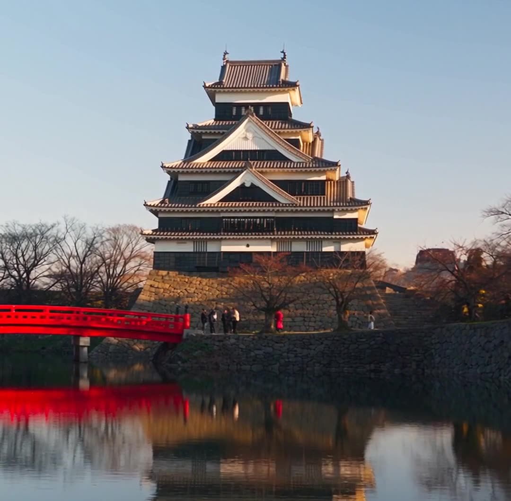
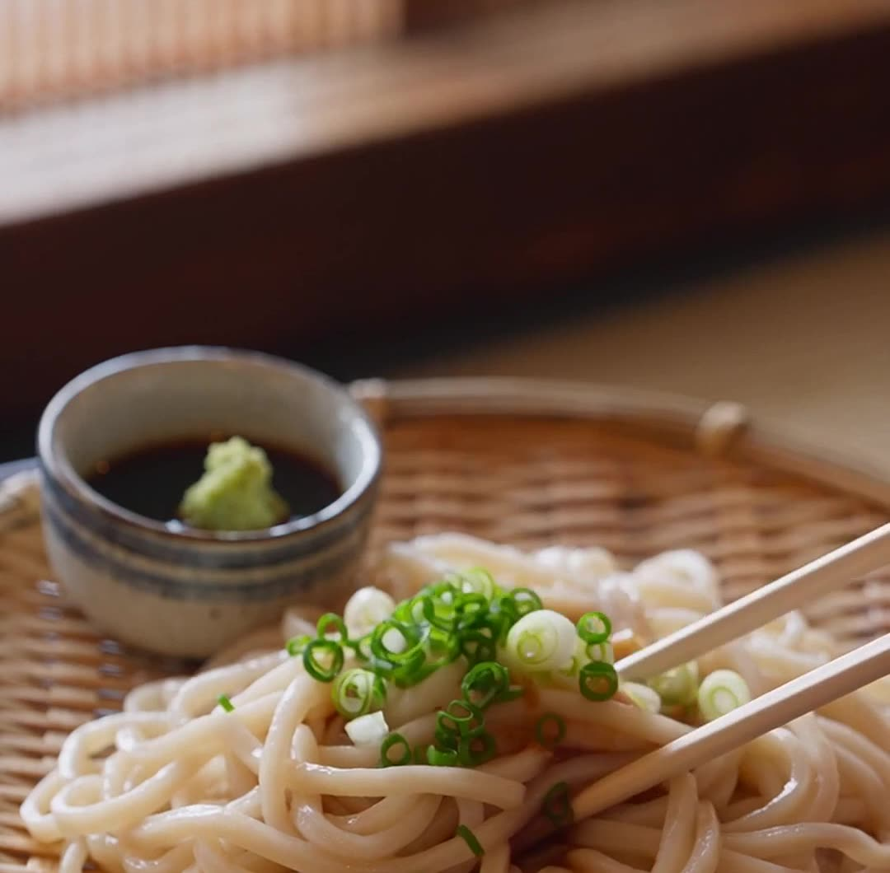
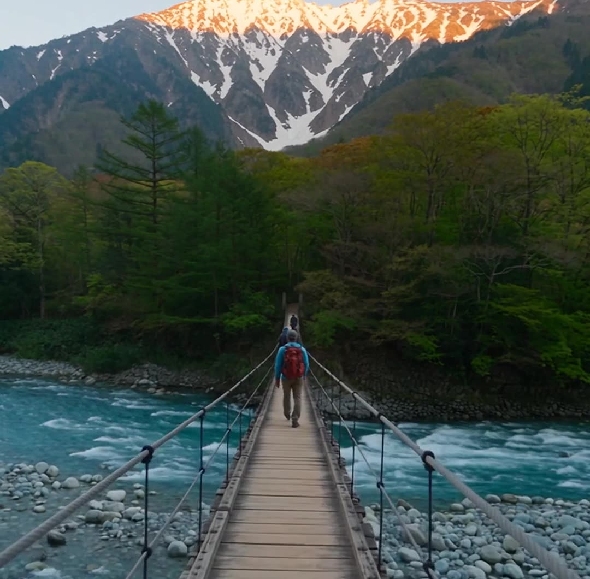
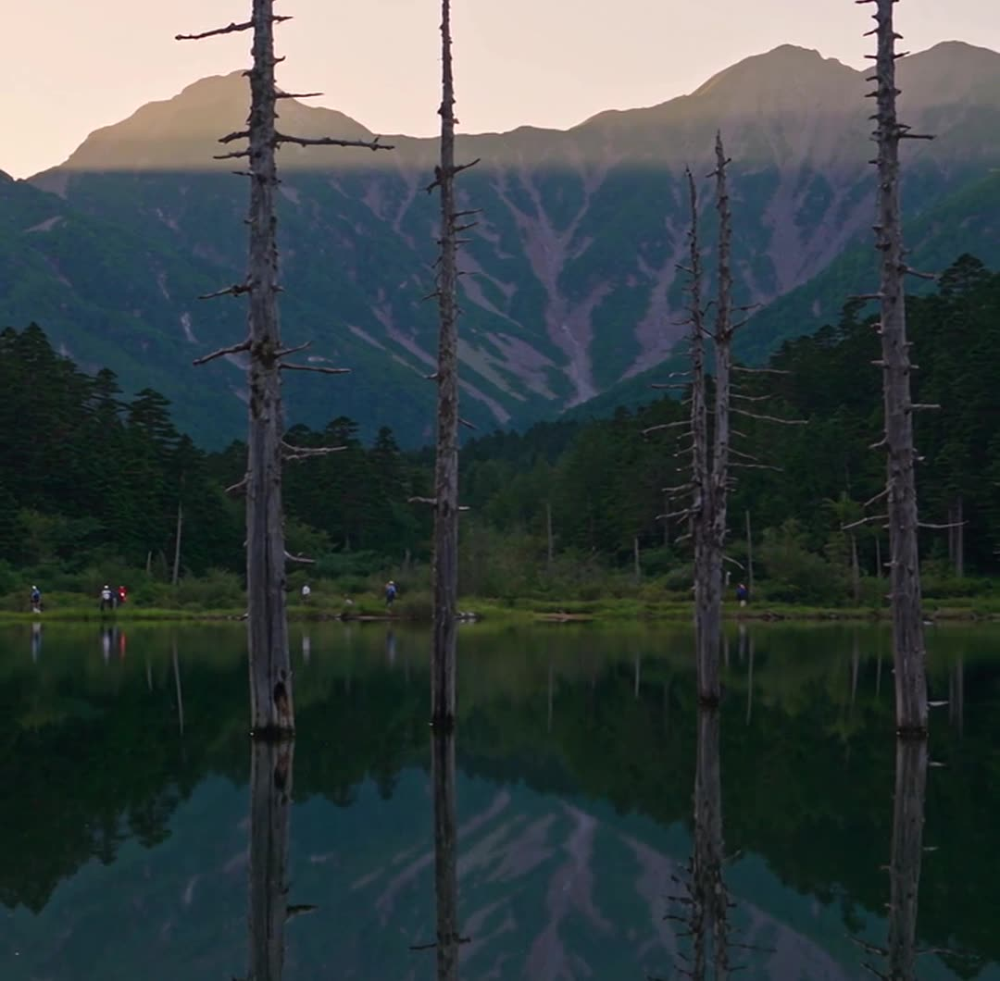

일본 알프스를
가장 가까이에서, 나가노
국보 마쓰모토성과 메밀의 고장 신슈 소바, 그리고 설산이 비치는 가미코치까지. 마쓰모토를 거점으로 도는 1박 2일 코스예요.
📢 이 페이지에는 제휴 링크가 포함될 수 있어요. 링크로 예약하시면 1분여행이 일정 수수료를 받을 수 있지만, 예약하시는 가격은 같아요.
한눈에 보기
만족도2026 자란 조사 종합 만족도 공동 6위
추천 일정1박 2일 · 1일차 마쓰모토, 2일차 가미코치
가는 법신주쿠에서 특급 아즈사로 마쓰모토까지 약 2시간 30분
가미코치자가용 진입 불가 · 마쓰모토에서 버스로 이동 (예약 필수)
꼭 먹을 것신슈 소바
⚠️ 가미코치는 겨울에 닫혀요. 2026년 개방 기간은 4월 17일~11월 15일이었어요. 지금(겨울) 가신다면 1일차 마쓰모토 코스와 젠코지를 중심으로 짜세요.
💡 영상은 하루로 압축했지만 마쓰모토·가미코치·젠코지(나가노시)는 서로 떨어져 있어요. 실제로는 1박 2일 이상을 추천해요.
DAY 1 · 마쓰모토
- 오전마쓰모토성
검은 외벽 때문에 '까마귀 성'이라 불리는 국보 성. 지금 남아 있는 5층 천수 중 가장 오래됐어요. 마쓰모토역에서 걸어서 약 20분
- 점심신슈 소바
성 근처 다이묘초 거리와 역 주변에 소바 가게가 모여 있어요 (아래 맛집 참고)
- 해 질 녘북알프스 석양
마쓰모토 시내에서 서쪽 설산 능선이 붉게 물드는 걸 볼 수 있어요


DAY 2 · 가미코치 (4월 중순~11월 중순)
- 아침마쓰모토 → 가미코치
마쓰모토 버스터미널 또는 신시마시마역에서 버스. 자가용은 사완도 주차장에 두고 셔틀버스로 갈아타요
- 오전갓파바시
에메랄드빛 아즈사강 너머로 호타카 연봉이 정면으로 보이는 나무 다리
- 점심 후아즈사강 산책로
강을 따라 숲속 나무 데크 길을 걸어요
- 오후다이쇼이케 연못
고사목과 산봉우리가 수면에 그대로 비치는 연못. 갓파바시에서 강을 따라 걸어갈 수 있어요


🛕 젠코지는 나가노시에 있어서 마쓰모토에서 따로 이동해야 해요. 하루를 더 잡거나, 가미코치가 닫힌 겨울에 2일차 일정으로 넣는 걸 추천해요.
🍽️ 맛집 · 신슈 소바
마쓰모토성 도보 1분 · 다이묘초 거리
와쇼쿠 소바도코로 다카기 (和食そば処 たかぎ)
아즈미노산 메밀을 맷돌로 갈아 만든 수타 십할 소바. 소바 만들기 체험(예약제)도 있어요
마쓰모토역 도보 5분
소바키리 미요타 마쓰모토점 (そばきりみよ田)
지역 향토 요리 '토지 소바'를 맛볼 수 있어요. 11:30~15:00, 17:00~22:00 (일요일은 점심만) · 카드 가능
마쓰모토 시내
소바도코로 아사다 (そば処 浅田)
메뉴가 3가지뿐인, 직접 제분한 수타 소바 명점. 11:30~16:00 · 일·월 휴무 · 자루소바 900엔~
🏨 숙소
마쓰모토 (1일차)
가미코치 안 (시즌 한정)
※ 운영 시간과 요금, 개방 기간은 바뀔 수 있어요. 방문 전에 공식 정보를 한 번 더 확인하세요. 사진은 AI로 만든 영상의 장면이에요.
← TOP 10 목록으로